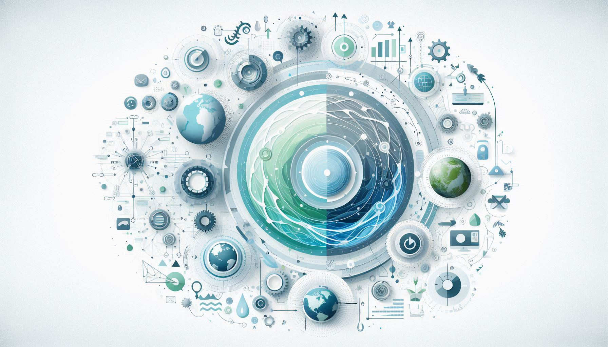

Ciclos naturais e autorregulação (ex: ciclo da água 🌊) - Os sistemas naturais
referem-se aos processos que ocorrem no meio ambiente sem intervenção humana direta. Um exemplo
é o ciclo da água, crucial para o equilíbrio ecológico. Alterações neste ciclo, como as causadas
pelas mudanças climáticas, podem levar a desastres naturais, impactando a vida humana e a
biodiversidade.
Interconexão entre ecossistemas 🌳 - Ecossistemas são comunidades de organismos
interagindo. Por exemplo, a poluição em um rio pode afetar a fauna aquática e, consequentemente,
impactar as plantas e animais nas margens. O derrame de petróleo de 2010 no Golfo do México é um
exemplo de como um evento pode afetar ecossistemas e economias locais, mostrando a fragilidade
da interconexão entre os sistemas naturais e as atividades humanas.

Sistemas de Troca 💱
Escambo entre mercadorias nas sociedades primitivas 🏺 - Antes da invenção do
dinheiro, as pessoas trocavam bens diretamente. Este sistema permitiu a sobrevivência de
comunidades, mas era limitado e dependia da necessidade mútua. Nos dias de hoje, plataformas de
troca como o OLX e o Facebook Marketplace revitalizam essa prática, permitindo que as pessoas
troquem bens de forma mais organizada e acessível.
Desenvolvimento do comércio 💰 – O comércio evoluiu com o uso da moeda,
facilitando as transações. O comércio online cresceu exponencialmente, especialmente durante a
pandemia de COVID-19, quando o comércio físico foi interrompido. Isso alterou radicalmente a
maneira como as pessoas compram, destacando a importância de sistemas de troca ágeis e eficazes.
Sistemas de Escrita ✍️
Primeiros registos em pedra e argila para transações 📜 - A escrita surgiu para
registrar transações. Este desenvolvimento permitiu a criação de civilizações complexas.
Atualmente, a digitalização da informação, como a blockchain, transforma a forma como
registramos e verificamos transações, aumentando a segurança e a transparência.
Criação de leis e documentação 📚 – Com a escrita, tornou-se possível
documentar leis e tratados. Hoje, a falta de transparência em sistemas legais pode levar a
injustiças. Por exemplo, escândalos como o caso da Operação Lava Jato no Brasil revelam como
sistemas corruptos podem minar a confiança da população nas instituições.
Sistemas de Governo 🏛️
Criação de governos organizados (monarquias 👑, repúblicas 🇵🇹) - Sistemas de
governo regulam a sociedade. Em momentos de crise, como a crise financeira de 2008, sistemas de
governo devem responder rapidamente às necessidades da população, demonstrando a eficácia ou
ineficácia dos mesmos na manutenção da ordem social.
Estruturação de sociedades e leis ⚖️ – Leis garantem a ordem. No entanto,
falhas no sistema legal, como o caso dos abusos de direitos humanos em diversos países, mostram
como a implementação e a aplicação das leis podem falhar, levando a conflitos e descontentamento
social.
Sistemas de Moeda 💵
Introdução da moeda para facilitar trocas comerciais 💳 – A moeda facilitou
transações, substituindo o escambo. Hoje, a volatilidade de criptomoedas como o Bitcoin
exemplifica como novos sistemas monetários podem desafiar economias tradicionais e criar
incertezas no mercado financeiro.
Evolução dos métodos de pagamento 💳 – Os métodos de pagamento evoluíram para
incluir cartões e pagamentos digitais. Durante a pandemia, o uso de pagamentos sem contacto
cresceu, destacando a importância da adaptabilidade dos sistemas financeiros às necessidades das
pessoas.
Sistemas de Informação 💻
Revolução digital com computadores e redes de dados 🌐 – A revolução digital
alterou a forma como processamos informações. Por exemplo, o escândalo da Cambridge Analytica
ilustra como a manipulação de dados pode impactar a opinião pública e influenciar eleições,
demonstrando a responsabilidade associada ao manejo de sistemas de informação.
Acesso à informação em larga escala 📊 - Com a internet, o acesso à informação
tornou-se fácil, mas também problemático, com a disseminação de fake news afetando a percepção
pública e a confiança em informações vitais.
Sistemas de AI e Automação 🤖
Inteligência Artificial e automação de processos ⚙️ – A IA está revolucionando
a forma como trabalhamos e vivemos. A automação de empregos, como em fábricas e serviços,
levanta questões sobre o futuro do trabalho e a necessidade de requalificação profissional para
os trabalhadores afetados.
Otimização da produção e serviços 🛠️ – Avanços como a automação de chatbots
melhoram o atendimento ao cliente, mas também podem resultar em desemprego em setores
tradicionais. A discussão sobre um futuro onde humanos e máquinas coexistem de forma equilibrada
é cada vez mais relevante.
Sistemas Cibernéticos 🌐
Integração entre tecnologia e corpo humano (próteses 🤖) – Sistemas
cibernéticos melhoram a saúde e qualidade de vida. No entanto, questões éticas surgem com a
biotecnologia, como o uso de edição genética (CRISPR) e suas implicações sociais.
Avanços em Biotecnologia e conectividade 🔬 – Dispositivos de monitoramento de
saúde estão a revolucionar a medicina, mas a privacidade dos dados pessoais e a segurança
digital são preocupações crescentes.
Sistemas de Computação Quântica 🧩
Desenvolvimento de novos sistemas de computação (ex: Google e IBM) 🔗 – A
computação quântica promete resolver problemas complexos em frações de tempo. No entanto, as
implicações éticas e de segurança são assuntos de discussão intensa, considerando como isso
poderá afetar a criptografia e a segurança de dados.
Novas possibilidades em inteligência e velocidade 🔍 – Os avanços em computação
quântica podem revolucionar a forma como processamos informações, desde a previsão de mudanças
climáticas até a modelagem de novos medicamentos.